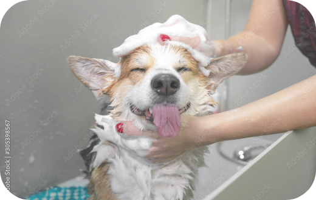
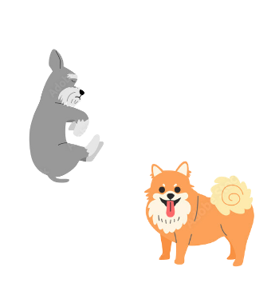

トリミング
飼い主様にも、動物達にも安心してご利用いただけるトリミングを目指しています。
3つのポイント
1.健康チェック
動物たちの体調や皮膚、被毛の状態を確認したうえでその子に合ったトリミングを行います。
2.シャンプー
シャンプーの工程で、皮膚や体表の異変を早期発見することで、医療スタッフと連携し、よりよい生活をサポートします。
3.カット
動物たちの可愛さを引き出し、飼い主様の要望に沿ったトリミングサービスを提供します。
当院のトリミングの魅力
ハーブパック
スキンケアとビューティーケアが同時にできるハーブパックは、ワンちゃんの皮膚のトラブルを防ぎ、被毛を美しくツヤツヤに仕上げます。
効果
- 1. ニオイ・べたつきを長期間抑えます。
- 2. 細菌の過激な増殖を防ぎます。
- 3. 乾燥を防ぎ、フケ・かゆみを抑えます。
- 4. 肌荒れを防ぎ、健康な肌に。
マイクロバブル
マイクロバブルは、洗浄効果抜群。目には見えない超微細な気泡で毛穴の奥に入り込んでいた汚れや老廃物を取って、スッキリきれいに仕上げます。
効果
- 1. 皮膚と毛並みの改善
- 2. ニオイ除去
- 3. 血行促進
- 4. マッサージ効果
注意事項
・当院のトリミングは、完全予約制です。
はじめての方は診察の予約もあわせて必要となります。
・予約時間を10分過ぎた場合は予約が無効になりますので
お時間に余裕をもってご来院ください。
・1年以内に予防接種を受けられていない動物のトリミングは、
場合によってはお断りさせていただくことがあります。
・もつれ、毛玉など被毛の状態によっては追加料金がかかることがあります。
・トリミング料金はお預かりの際に全額お支払いいただきます。
